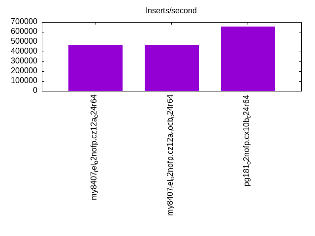
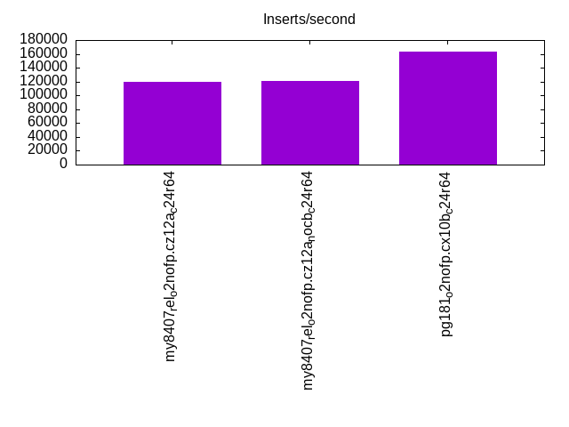
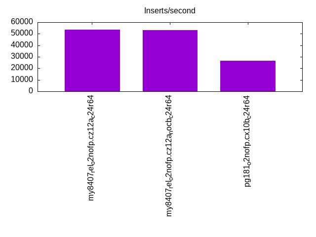
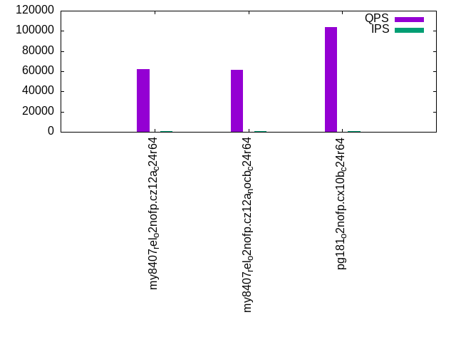
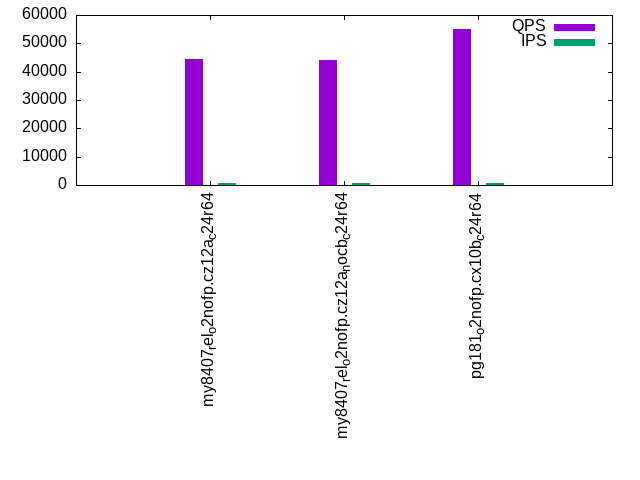
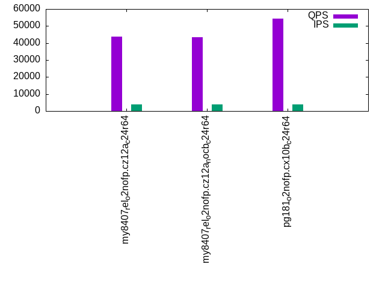
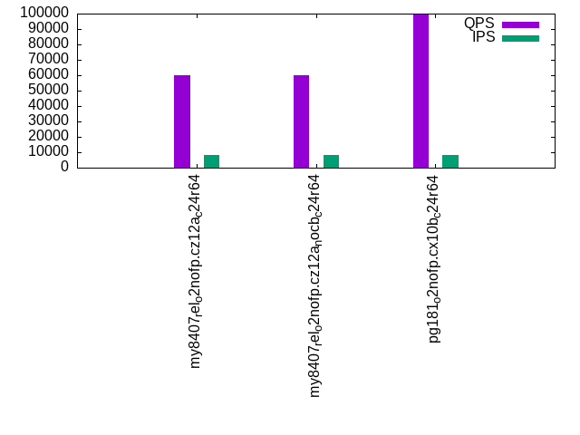
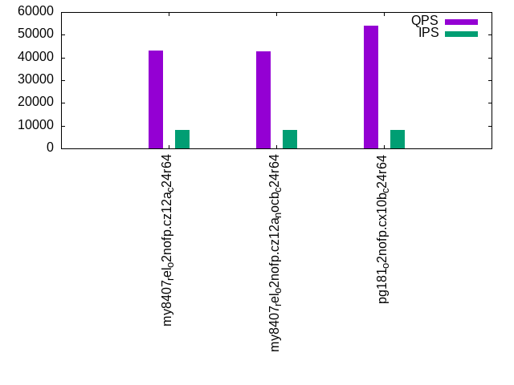

This is a report for the insert benchmark with 80M docs and 8 client(s). It is generated by scripts (bash, awk, sed) and Tufte might not be impressed. An overview of the insert benchmark is here and a short update is here. Below, by DBMS, I mean DBMS+version.config. An example is my8020.c10b40 where my means MySQL, 8020 is version 8.0.20 and c10b40 is the name for the configuration file.
The test server has 24 cores, 2 sockets, 64G RAM and 1 NVMe devices. The benchmark was run with 8 clients and there were 1 or 3 connections per client (1 for queries or inserts without rate limits, 1+1 for rate limited inserts+deletes). It uses 8 tables with a table per client. It loads 10M rows per table without secondary indexes, creates 3 secondary indexes per table, then inserts 16m+4m rows per table with a delete per insert to avoid growing the table. It then does 6 read+write tests for 1800s each that do queries as fast as possible with 100,100,500,500,1000,1000 inserts/s and the same for deletes/s per client concurrent with the queries. The database is cached by InnoDB. Clients and the DBMS share one server.
The tested DBMS are:
The numbers are inserts/s for l.i0, l.i1 and l.i2, indexed docs (or rows) /s for l.x and queries/s for qr100, qp100 thru qr1000, qp1000" The values are the average rate over the entire test for inserts (IPS) and queries (QPS). The range of values for IPS and QPS is split into 3 parts: bottom 25%, middle 50%, top 25%. Values in the bottom 25% have a red background, values in the top 25% have a green background and values in the middle have no color. A gray background is used for values that can be ignored because the DBMS did not sustain the target insert rate. Red backgrounds are not used when the minimum value is within 80% of the max value.
| dbms | l.i0 | l.x | l.i1 | l.i2 | qr100 | qp100 | qr500 | qp500 | qr1000 | qp1000 |
|---|---|---|---|---|---|---|---|---|---|---|
| my8407_rel_o2nofp.cz12a_c24r64 | 467836 | 1025642 | 119738 | 53782 | 61985 | 44306 | 61535 | 43764 | 60208 | 43030 |
| my8407_rel_o2nofp.cz12a_nocb_c24r64 | 465116 | 1052633 | 120869 | 53333 | 61709 | 44157 | 61056 | 43568 | 59769 | 42827 |
| pg181_o2nofp.cx10b_c24r64 | 655738 | 1403510 | 162643 | 26468 | 103714 | 55134 | 100668 | 54378 | 99674 | 53849 |
This table has relative throughput, throughput for the DBMS relative to the DBMS in the first line, using the absolute throughput from the previous table. Values less than 0.95 have a yellow background. Values greater than 1.05 have a blue background.
| dbms | l.i0 | l.x | l.i1 | l.i2 | qr100 | qp100 | qr500 | qp500 | qr1000 | qp1000 |
|---|---|---|---|---|---|---|---|---|---|---|
| my8407_rel_o2nofp.cz12a_c24r64 | 1.00 | 1.00 | 1.00 | 1.00 | 1.00 | 1.00 | 1.00 | 1.00 | 1.00 | 1.00 |
| my8407_rel_o2nofp.cz12a_nocb_c24r64 | 0.99 | 1.03 | 1.01 | 0.99 | 1.00 | 1.00 | 0.99 | 1.00 | 0.99 | 1.00 |
| pg181_o2nofp.cx10b_c24r64 | 1.40 | 1.37 | 1.36 | 0.49 | 1.67 | 1.24 | 1.64 | 1.24 | 1.66 | 1.25 |
This lists the average rate of inserts/s for the tests that do inserts concurrent with queries. For such tests the query rate is listed in the table above. The read+write tests are setup so that the insert rate should match the target rate every second. Cells that are not at least 95% of the target have a red background to indicate a failure to satisfy the target.
| dbms | qr100.L1 | qp100.L2 | qr500.L3 | qp500.L4 | qr1000.L5 | qp1000.L6 |
|---|---|---|---|---|---|---|
| my8407_rel_o2nofp.cz12a_c24r64 | 796 | 797 | 3982 | 3982 | 7969 | 7965 |
| my8407_rel_o2nofp.cz12a_nocb_c24r64 | 797 | 796 | 3984 | 3984 | 7965 | 7969 |
| pg181_o2nofp.cx10b_c24r64 | 796 | 797 | 3984 | 3982 | 7965 | 7969 |
| target | 800 | 800 | 4000 | 4000 | 8000 | 8000 |
l.i0: load without secondary indexes. Graphs for performance per 1-second interval are here.
Average throughput:
Insert response time histogram: each cell has the percentage of responses that take <= the time in the header and max is the max response time in seconds. For the max column values in the top 25% of the range have a red background and in the bottom 25% of the range have a green background. The red background is not used when the min value is within 80% of the max value.
| dbms | 256us | 1ms | 4ms | 16ms | 64ms | 256ms | 1s | 4s | 16s | gt | max |
|---|---|---|---|---|---|---|---|---|---|---|---|
| my8407_rel_o2nofp.cz12a_c24r64 | 99.786 | 0.187 | 0.013 | 0.014 | 0.243 | ||||||
| my8407_rel_o2nofp.cz12a_nocb_c24r64 | 99.801 | 0.168 | 0.017 | 0.014 | 0.250 | ||||||
| pg181_o2nofp.cx10b_c24r64 | 30.006 | 69.944 | 0.022 | 0.020 | 0.009 | 0.165 |
Performance metrics for the DBMS listed above. Some are normalized by throughput, others are not. Legend for results is here.
ips qps rps rmbps wps wmbps rpq rkbpq wpi wkbpi csps cpups cspq cpupq dbgb1 dbgb2 rss maxop p50 p99 tag 467836 0 0 0.0 1769.4 136.3 0.000 0.000 0.004 0.298 89008 44.8 0.190 23 5.3 59.6 8.6 0.243 63892 49891 my8407_rel_o2nofp.cz12a_c24r64 465116 0 0 0.0 1777.5 136.6 0.000 0.000 0.004 0.301 89361 44.7 0.192 23 5.3 59.6 8.7 0.250 65791 50594 my8407_rel_o2nofp.cz12a_nocb_c24r64 655738 0 0 0.0 2436.5 283.3 0.000 0.000 0.004 0.442 63331 45.8 0.097 17 7.7 20.7 0.2 0.165 95588 64192 pg181_o2nofp.cx10b_c24r64
Average values from iostat.
r/s rkB/s rrqm/s %rrqm r_await rareq-s w/s wkB/s wrqm/s %wrqm w_await wareq-s d/s dkB/s drqm/s %drqm d_await dareq-s f/s f_await aqu-sz %util 0.400 1.671 0.000 0.000 2.902 4.000 1769.4 139607 76.71 5.918 8.452 85.70 0.471 7.129 0.000 0.000 0.160 5.343 0.000 0.000 15.54 9.024 my8407_rel_o2nofp.cz12a_c24r64 0.429 2.000 0.000 0.000 3.704 4.618 1777.5 139905 75.96 5.866 8.604 85.57 0.406 4.259 0.000 0.000 0.133 4.795 0.000 0.000 15.92 9.062 my8407_rel_o2nofp.cz12a_nocb_c24r64 0.025 0.100 0.000 0.000 0.750 0.500 2436.5 290141 158.7 6.821 4.156 119.2 0.425 9.233 0.000 0.000 0.145 10.37 0.000 0.000 15.49 16.51 pg181_o2nofp.cx10b_c24r64
l.x: create secondary indexes.
Average throughput:
Performance metrics for the DBMS listed above. Some are normalized by throughput, others are not. Legend for results is here.
ips qps rps rmbps wps wmbps rpq rkbpq wpi wkbpi csps cpups cspq cpupq dbgb1 dbgb2 rss maxop p50 p99 tag 1025642 0 24 0.8 31439.9 1216.4 0.000 0.001 0.031 1.214 69039 64.5 0.067 15 12.1 66.5 11.8 0.005 NA NA my8407_rel_o2nofp.cz12a_c24r64 1052633 0 29 0.8 32694.6 1236.3 0.000 0.001 0.031 1.203 69654 63.7 0.066 15 12.1 66.5 12.0 0.002 NA NA my8407_rel_o2nofp.cz12a_nocb_c24r64 1403510 0 0 0.0 3758.5 426.6 0.000 0.000 0.003 0.311 3709 23.8 0.003 4 15.4 35.4 6.7 0.003 NA NA pg181_o2nofp.cx10b_c24r64
Average values from iostat.
r/s rkB/s rrqm/s %rrqm r_await rareq-s w/s wkB/s wrqm/s %wrqm w_await wareq-s d/s dkB/s drqm/s %drqm d_await dareq-s f/s f_await aqu-sz %util 23.92 804.2 0.000 0.000 0.313 31.82 31439.9 1245636 240.2 1.175 6.367 51.43 45.85 172629 0.027 0.031 1.053 2866.5 0.000 0.000 148.1 86.66 my8407_rel_o2nofp.cz12a_c24r64 28.77 849.5 0.000 0.000 0.293 30.55 32694.6 1265944 261.3 1.217 5.901 50.24 45.91 172746 0.000 0.000 0.869 3132.5 0.000 0.000 141.9 87.30 my8407_rel_o2nofp.cz12a_nocb_c24r64 0.036 0.145 0.000 0.000 0.500 0.364 3758.5 436871 131.9 13.85 6.635 99.84 3.327 33289.5 0.000 0.000 0.300 7377.9 0.000 0.000 40.33 28.73 pg181_o2nofp.cx10b_c24r64
l.i1: continue load after secondary indexes created with 50 inserts per transaction. Graphs for performance per 1-second interval are here.
Average throughput:
Insert response time histogram: each cell has the percentage of responses that take <= the time in the header and max is the max response time in seconds. For the max column values in the top 25% of the range have a red background and in the bottom 25% of the range have a green background. The red background is not used when the min value is within 80% of the max value.
| dbms | 256us | 1ms | 4ms | 16ms | 64ms | 256ms | 1s | 4s | 16s | gt | max |
|---|---|---|---|---|---|---|---|---|---|---|---|
| my8407_rel_o2nofp.cz12a_c24r64 | 94.673 | 4.662 | 0.642 | 0.018 | 0.006 | 0.433 | |||||
| my8407_rel_o2nofp.cz12a_nocb_c24r64 | 94.859 | 4.493 | 0.625 | 0.020 | 0.003 | 0.367 | |||||
| pg181_o2nofp.cx10b_c24r64 | 99.704 | 0.185 | 0.110 | 0.001 | 0.089 |
Delete response time histogram: each cell has the percentage of responses that take <= the time in the header and max is the max response time in seconds. For the max column values in the top 25% of the range have a red background and in the bottom 25% of the range have a green background. The red background is not used when the min value is within 80% of the max value.
| dbms | 256us | 1ms | 4ms | 16ms | 64ms | 256ms | 1s | 4s | 16s | gt | max |
|---|---|---|---|---|---|---|---|---|---|---|---|
| my8407_rel_o2nofp.cz12a_c24r64 | 97.219 | 2.354 | 0.407 | 0.015 | 0.005 | 0.439 | |||||
| my8407_rel_o2nofp.cz12a_nocb_c24r64 | 97.171 | 2.406 | 0.405 | 0.016 | 0.003 | 0.366 | |||||
| pg181_o2nofp.cx10b_c24r64 | 13.214 | 83.440 | 3.226 | 0.119 | 0.001 | 0.090 |
Performance metrics for the DBMS listed above. Some are normalized by throughput, others are not. Legend for results is here.
ips qps rps rmbps wps wmbps rpq rkbpq wpi wkbpi csps cpups cspq cpupq dbgb1 dbgb2 rss maxop p50 p99 tag 119738 0 362 5.7 6735.1 274.4 0.003 0.048 0.056 2.347 104437 81.5 0.872 163 19.9 87.7 24.3 0.433 15598 5949 my8407_rel_o2nofp.cz12a_c24r64 120869 0 364 5.7 6657.8 271.0 0.003 0.048 0.055 2.296 103661 81.7 0.858 162 20.0 88.0 24.5 0.367 15748 5549 my8407_rel_o2nofp.cz12a_nocb_c24r64 162643 0 0 0.0 1974.2 230.1 0.000 0.000 0.012 1.449 74951 60.3 0.461 89 21.6 85.7 10.9 0.089 16898 4949 pg181_o2nofp.cx10b_c24r64
Average values from iostat.
r/s rkB/s rrqm/s %rrqm r_await rareq-s w/s wkB/s wrqm/s %wrqm w_await wareq-s d/s dkB/s drqm/s %drqm d_await dareq-s f/s f_await aqu-sz %util 362.4 5796.5 0.000 0.000 1.205 10.28 6735.1 281023 49.58 0.714 7.722 42.58 0.216 14.05 0.000 0.000 0.087 13.00 0.000 0.000 50.84 20.31 my8407_rel_o2nofp.cz12a_c24r64 364.1 5823.9 0.000 0.000 0.826 10.17 6657.8 277540 49.95 0.728 7.797 42.54 0.160 5.487 0.000 0.000 0.068 7.947 0.000 0.000 50.73 20.62 my8407_rel_o2nofp.cz12a_nocb_c24r64 0.009 0.036 0.000 0.000 0.038 0.178 1974.2 235658 101.8 4.157 1.768 119.0 0.079 103.3 0.000 0.000 0.030 146.6 0.000 0.000 3.961 12.07 pg181_o2nofp.cx10b_c24r64
l.i2: continue load after secondary indexes created with 5 inserts per transaction. Graphs for performance per 1-second interval are here.
Average throughput:
Insert response time histogram: each cell has the percentage of responses that take <= the time in the header and max is the max response time in seconds. For the max column values in the top 25% of the range have a red background and in the bottom 25% of the range have a green background. The red background is not used when the min value is within 80% of the max value.
| dbms | 256us | 1ms | 4ms | 16ms | 64ms | 256ms | 1s | 4s | 16s | gt | max |
|---|---|---|---|---|---|---|---|---|---|---|---|
| my8407_rel_o2nofp.cz12a_c24r64 | 93.696 | 6.041 | 0.192 | 0.068 | 0.002 | 0.001 | 0.321 | ||||
| my8407_rel_o2nofp.cz12a_nocb_c24r64 | 93.342 | 6.258 | 0.331 | 0.066 | 0.002 | 0.001 | 0.333 | ||||
| pg181_o2nofp.cx10b_c24r64 | 26.150 | 73.850 | nonzero | 0.002 |
Delete response time histogram: each cell has the percentage of responses that take <= the time in the header and max is the max response time in seconds. For the max column values in the top 25% of the range have a red background and in the bottom 25% of the range have a green background. The red background is not used when the min value is within 80% of the max value.
| dbms | 256us | 1ms | 4ms | 16ms | 64ms | 256ms | 1s | 4s | 16s | gt | max |
|---|---|---|---|---|---|---|---|---|---|---|---|
| my8407_rel_o2nofp.cz12a_c24r64 | nonzero | 94.859 | 4.927 | 0.155 | 0.056 | 0.002 | 0.001 | 0.320 | |||
| my8407_rel_o2nofp.cz12a_nocb_c24r64 | nonzero | 94.386 | 5.274 | 0.284 | 0.053 | 0.002 | nonzero | 0.332 | |||
| pg181_o2nofp.cx10b_c24r64 | 0.005 | 34.018 | 65.558 | 0.420 | 0.012 |
Performance metrics for the DBMS listed above. Some are normalized by throughput, others are not. Legend for results is here.
ips qps rps rmbps wps wmbps rpq rkbpq wpi wkbpi csps cpups cspq cpupq dbgb1 dbgb2 rss maxop p50 p99 tag 53782 0 0 0.0 5064.6 199.9 0.000 0.000 0.094 3.806 295766 71.8 5.499 320 19.9 93.9 24.5 0.321 7204 1300 my8407_rel_o2nofp.cz12a_c24r64 53333 0 0 0.0 5058.4 199.5 0.000 0.000 0.095 3.830 292391 71.7 5.482 323 20.0 94.1 24.7 0.333 7299 1185 my8407_rel_o2nofp.cz12a_nocb_c24r64 26468 0 0 0.0 218.0 26.1 0.000 0.000 0.008 1.011 113515 42.2 4.289 383 21.8 85.9 15.3 0.002 2360 1200 pg181_o2nofp.cx10b_c24r64
Average values from iostat.
r/s rkB/s rrqm/s %rrqm r_await rareq-s w/s wkB/s wrqm/s %wrqm w_await wareq-s d/s dkB/s drqm/s %drqm d_await dareq-s f/s f_await aqu-sz %util 0.121 0.484 0.000 0.000 1.858 1.445 5064.6 204716 3.333 0.065 7.845 40.40 0.163 6.205 0.000 0.000 0.058 6.769 0.000 0.000 39.87 14.13 my8407_rel_o2nofp.cz12a_c24r64 0.087 0.347 0.000 0.000 4.840 1.333 5058.4 204253 3.295 0.065 7.953 40.38 0.167 2.540 0.000 0.000 0.061 2.252 0.000 0.000 40.39 14.18 my8407_rel_o2nofp.cz12a_nocb_c24r64 0.000 0.000 0.000 0.000 0.000 0.000 218.0 26764.0 4.547 2.223 0.139 122.8 0.002 0.010 0.000 0.000 0.004 0.050 0.000 0.000 0.031 1.118 pg181_o2nofp.cx10b_c24r64
qr100.L1: range queries with 100 insert/s per client. Graphs for performance per 1-second interval are here.
Average throughput:
Query response time histogram: each cell has the percentage of responses that take <= the time in the header and max is the max response time in seconds. For max values in the top 25% of the range have a red background and in the bottom 25% of the range have a green background. The red background is not used when the min value is within 80% of the max value.
| dbms | 256us | 1ms | 4ms | 16ms | 64ms | 256ms | 1s | 4s | 16s | gt | max |
|---|---|---|---|---|---|---|---|---|---|---|---|
| my8407_rel_o2nofp.cz12a_c24r64 | 99.974 | 0.026 | nonzero | 0.004 | |||||||
| my8407_rel_o2nofp.cz12a_nocb_c24r64 | 99.976 | 0.024 | nonzero | 0.004 | |||||||
| pg181_o2nofp.cx10b_c24r64 | 99.998 | 0.002 | nonzero | 0.002 |
Insert response time histogram: each cell has the percentage of responses that take <= the time in the header and max is the max response time in seconds. For max values in the top 25% of the range have a red background and in the bottom 25% of the range have a green background. The red background is not used when the min value is within 80% of the max value.
| dbms | 256us | 1ms | 4ms | 16ms | 64ms | 256ms | 1s | 4s | 16s | gt | max |
|---|---|---|---|---|---|---|---|---|---|---|---|
| my8407_rel_o2nofp.cz12a_c24r64 | 99.840 | 0.160 | 0.005 | ||||||||
| my8407_rel_o2nofp.cz12a_nocb_c24r64 | 99.757 | 0.243 | 0.007 | ||||||||
| pg181_o2nofp.cx10b_c24r64 | 99.795 | 0.205 | 0.009 |
Delete response time histogram: each cell has the percentage of responses that take <= the time in the header and max is the max response time in seconds. For max values in the top 25% of the range have a red background and in the bottom 25% of the range have a green background. The red background is not used when the min value is within 80% of the max value.
| dbms | 256us | 1ms | 4ms | 16ms | 64ms | 256ms | 1s | 4s | 16s | gt | max |
|---|---|---|---|---|---|---|---|---|---|---|---|
| my8407_rel_o2nofp.cz12a_c24r64 | 99.931 | 0.069 | 0.007 | ||||||||
| my8407_rel_o2nofp.cz12a_nocb_c24r64 | 99.885 | 0.115 | 0.006 | ||||||||
| pg181_o2nofp.cx10b_c24r64 | 25.583 | 74.417 | 0.003 |
Performance metrics for the DBMS listed above. Some are normalized by throughput, others are not. Legend for results is here.
ips qps rps rmbps wps wmbps rpq rkbpq wpi wkbpi csps cpups cspq cpupq dbgb1 dbgb2 rss maxop p50 p99 tag 796 61985 0 0.0 1009.1 28.6 0.000 0.000 1.267 36.767 357719 33.7 5.771 130 19.9 94.0 24.5 0.004 7807 7423 my8407_rel_o2nofp.cz12a_c24r64 797 61709 0 0.0 1041.5 29.5 0.000 0.000 1.307 37.920 356131 33.8 5.771 131 20.0 94.2 24.7 0.004 7775 7327 my8407_rel_o2nofp.cz12a_nocb_c24r64 796 103714 0 0.0 36.3 3.7 0.000 0.000 0.046 4.718 396398 33.3 3.822 77 21.8 85.8 0.4 0.002 13038 12413 pg181_o2nofp.cx10b_c24r64
Average values from iostat.
r/s rkB/s rrqm/s %rrqm r_await rareq-s w/s wkB/s wrqm/s %wrqm w_await wareq-s d/s dkB/s drqm/s %drqm d_await dareq-s f/s f_await aqu-sz %util 0.001 0.004 0.000 0.000 0.003 0.022 1009.1 29281.2 1.133 0.425 2.602 30.71 0.011 0.042 0.000 0.000 0.017 0.188 0.000 0.000 5.642 2.822 my8407_rel_o2nofp.cz12a_c24r64 0.001 0.004 0.000 0.000 0.000 0.022 1041.5 30218.8 1.393 0.431 2.860 30.25 0.008 0.058 0.000 0.000 0.012 0.259 0.000 0.000 5.754 22.23 my8407_rel_o2nofp.cz12a_nocb_c24r64 0.000 0.000 0.000 0.000 0.000 0.000 36.32 3757.7 0.800 2.851 0.172 102.0 0.001 0.002 0.000 0.000 0.000 0.011 0.000 0.000 0.006 0.235 pg181_o2nofp.cx10b_c24r64
qp100.L2: point queries with 100 insert/s per client. Graphs for performance per 1-second interval are here.
Average throughput:
Query response time histogram: each cell has the percentage of responses that take <= the time in the header and max is the max response time in seconds. For max values in the top 25% of the range have a red background and in the bottom 25% of the range have a green background. The red background is not used when the min value is within 80% of the max value.
| dbms | 256us | 1ms | 4ms | 16ms | 64ms | 256ms | 1s | 4s | 16s | gt | max |
|---|---|---|---|---|---|---|---|---|---|---|---|
| my8407_rel_o2nofp.cz12a_c24r64 | 99.855 | 0.145 | nonzero | nonzero | 0.004 | ||||||
| my8407_rel_o2nofp.cz12a_nocb_c24r64 | 99.831 | 0.169 | nonzero | 0.004 | |||||||
| pg181_o2nofp.cx10b_c24r64 | 99.981 | 0.019 | nonzero | 0.001 |
Insert response time histogram: each cell has the percentage of responses that take <= the time in the header and max is the max response time in seconds. For max values in the top 25% of the range have a red background and in the bottom 25% of the range have a green background. The red background is not used when the min value is within 80% of the max value.
| dbms | 256us | 1ms | 4ms | 16ms | 64ms | 256ms | 1s | 4s | 16s | gt | max |
|---|---|---|---|---|---|---|---|---|---|---|---|
| my8407_rel_o2nofp.cz12a_c24r64 | 99.906 | 0.094 | 0.006 | ||||||||
| my8407_rel_o2nofp.cz12a_nocb_c24r64 | 99.851 | 0.149 | 0.006 | ||||||||
| pg181_o2nofp.cx10b_c24r64 | 99.840 | 0.160 | 0.009 |
Delete response time histogram: each cell has the percentage of responses that take <= the time in the header and max is the max response time in seconds. For max values in the top 25% of the range have a red background and in the bottom 25% of the range have a green background. The red background is not used when the min value is within 80% of the max value.
| dbms | 256us | 1ms | 4ms | 16ms | 64ms | 256ms | 1s | 4s | 16s | gt | max |
|---|---|---|---|---|---|---|---|---|---|---|---|
| my8407_rel_o2nofp.cz12a_c24r64 | 99.997 | 0.003 | 0.004 | ||||||||
| my8407_rel_o2nofp.cz12a_nocb_c24r64 | 99.976 | 0.024 | 0.005 | ||||||||
| pg181_o2nofp.cx10b_c24r64 | 99.924 | 0.076 | 0.008 |
Performance metrics for the DBMS listed above. Some are normalized by throughput, others are not. Legend for results is here.
ips qps rps rmbps wps wmbps rpq rkbpq wpi wkbpi csps cpups cspq cpupq dbgb1 dbgb2 rss maxop p50 p99 tag 797 44306 0 0.0 88.5 3.0 0.000 0.000 0.111 3.884 257804 33.3 5.819 180 19.9 94.2 24.5 0.004 5567 5151 my8407_rel_o2nofp.cz12a_c24r64 796 44157 0 0.0 76.4 2.7 0.000 0.000 0.096 3.503 257121 33.3 5.823 181 20.0 94.4 24.7 0.004 5567 5167 my8407_rel_o2nofp.cz12a_nocb_c24r64 797 55134 0 0.0 102.3 7.1 0.000 0.000 0.128 9.146 213220 33.0 3.867 144 21.8 85.3 0.4 0.001 6895 6607 pg181_o2nofp.cx10b_c24r64
Average values from iostat.
r/s rkB/s rrqm/s %rrqm r_await rareq-s w/s wkB/s wrqm/s %wrqm w_await wareq-s d/s dkB/s drqm/s %drqm d_await dareq-s f/s f_await aqu-sz %util 0.001 0.004 0.000 0.000 0.000 0.022 88.47 3095.1 1.105 1.287 0.234 35.38 0.019 0.078 0.000 0.000 0.030 0.388 0.000 0.000 0.022 43.58 my8407_rel_o2nofp.cz12a_c24r64 0.001 0.004 0.000 0.000 0.000 0.022 76.43 2789.6 1.290 1.735 0.210 37.03 0.008 0.062 0.000 0.000 0.011 0.310 0.000 0.000 0.019 0.218 my8407_rel_o2nofp.cz12a_nocb_c24r64 0.000 0.000 0.000 0.000 0.000 0.000 102.3 7288.2 2.704 3.273 0.090 73.98 0.024 327.0 0.000 0.000 0.001 38.03 0.000 0.000 0.010 0.346 pg181_o2nofp.cx10b_c24r64
qr500.L3: range queries with 500 insert/s per client. Graphs for performance per 1-second interval are here.
Average throughput:
Query response time histogram: each cell has the percentage of responses that take <= the time in the header and max is the max response time in seconds. For max values in the top 25% of the range have a red background and in the bottom 25% of the range have a green background. The red background is not used when the min value is within 80% of the max value.
| dbms | 256us | 1ms | 4ms | 16ms | 64ms | 256ms | 1s | 4s | 16s | gt | max |
|---|---|---|---|---|---|---|---|---|---|---|---|
| my8407_rel_o2nofp.cz12a_c24r64 | 99.938 | 0.060 | 0.001 | nonzero | 0.005 | ||||||
| my8407_rel_o2nofp.cz12a_nocb_c24r64 | 99.944 | 0.055 | 0.001 | nonzero | 0.004 | ||||||
| pg181_o2nofp.cx10b_c24r64 | 99.994 | 0.006 | nonzero | nonzero | nonzero | 0.022 |
Insert response time histogram: each cell has the percentage of responses that take <= the time in the header and max is the max response time in seconds. For max values in the top 25% of the range have a red background and in the bottom 25% of the range have a green background. The red background is not used when the min value is within 80% of the max value.
| dbms | 256us | 1ms | 4ms | 16ms | 64ms | 256ms | 1s | 4s | 16s | gt | max |
|---|---|---|---|---|---|---|---|---|---|---|---|
| my8407_rel_o2nofp.cz12a_c24r64 | 97.339 | 2.661 | 0.014 | ||||||||
| my8407_rel_o2nofp.cz12a_nocb_c24r64 | 98.660 | 1.340 | 0.012 | ||||||||
| pg181_o2nofp.cx10b_c24r64 | 99.592 | 0.305 | 0.103 | 0.032 |
Delete response time histogram: each cell has the percentage of responses that take <= the time in the header and max is the max response time in seconds. For max values in the top 25% of the range have a red background and in the bottom 25% of the range have a green background. The red background is not used when the min value is within 80% of the max value.
| dbms | 256us | 1ms | 4ms | 16ms | 64ms | 256ms | 1s | 4s | 16s | gt | max |
|---|---|---|---|---|---|---|---|---|---|---|---|
| my8407_rel_o2nofp.cz12a_c24r64 | 98.636 | 1.364 | 0.016 | ||||||||
| my8407_rel_o2nofp.cz12a_nocb_c24r64 | 99.463 | 0.537 | 0.015 | ||||||||
| pg181_o2nofp.cx10b_c24r64 | 15.689 | 83.783 | 0.460 | 0.069 | 0.028 |
Performance metrics for the DBMS listed above. Some are normalized by throughput, others are not. Legend for results is here.
ips qps rps rmbps wps wmbps rpq rkbpq wpi wkbpi csps cpups cspq cpupq dbgb1 dbgb2 rss maxop p50 p99 tag 3982 61535 0 0.0 500.1 17.2 0.000 0.000 0.126 4.432 355506 35.3 5.777 138 19.9 94.9 24.5 0.005 7743 7294 my8407_rel_o2nofp.cz12a_c24r64 3984 61056 0 0.0 505.5 17.4 0.000 0.000 0.127 4.471 353189 35.3 5.785 139 20.0 95.1 24.7 0.004 7695 7263 my8407_rel_o2nofp.cz12a_nocb_c24r64 3984 100668 0 0.0 170.4 10.4 0.000 0.000 0.043 2.670 384638 34.4 3.821 82 21.9 80.4 13.1 0.022 12654 11854 pg181_o2nofp.cx10b_c24r64
Average values from iostat.
r/s rkB/s rrqm/s %rrqm r_await rareq-s w/s wkB/s wrqm/s %wrqm w_await wareq-s d/s dkB/s drqm/s %drqm d_await dareq-s f/s f_await aqu-sz %util 0.006 0.022 0.000 0.000 0.001 0.100 500.1 17649.9 1.346 0.321 2.737 36.81 0.044 0.722 0.000 0.000 0.050 2.033 0.000 0.000 1.530 2.316 my8407_rel_o2nofp.cz12a_c24r64 0.004 0.016 0.000 0.000 0.001 0.066 505.5 17813.5 1.328 0.309 2.833 36.42 0.041 0.301 0.000 0.000 0.047 1.252 0.000 0.000 1.574 3.259 my8407_rel_o2nofp.cz12a_nocb_c24r64 0.000 0.000 0.000 0.000 0.000 0.000 170.4 10639.1 4.290 2.173 0.149 64.06 0.188 2895.6 0.000 0.000 0.003 42.87 0.000 0.000 0.036 0.543 pg181_o2nofp.cx10b_c24r64
qp500.L4: point queries with 500 insert/s per client. Graphs for performance per 1-second interval are here.
Average throughput:
Query response time histogram: each cell has the percentage of responses that take <= the time in the header and max is the max response time in seconds. For max values in the top 25% of the range have a red background and in the bottom 25% of the range have a green background. The red background is not used when the min value is within 80% of the max value.
| dbms | 256us | 1ms | 4ms | 16ms | 64ms | 256ms | 1s | 4s | 16s | gt | max |
|---|---|---|---|---|---|---|---|---|---|---|---|
| my8407_rel_o2nofp.cz12a_c24r64 | 99.437 | 0.562 | 0.001 | nonzero | 0.004 | ||||||
| my8407_rel_o2nofp.cz12a_nocb_c24r64 | 99.394 | 0.605 | 0.001 | nonzero | 0.012 | ||||||
| pg181_o2nofp.cx10b_c24r64 | 99.967 | 0.033 | nonzero | nonzero | nonzero | 0.020 |
Insert response time histogram: each cell has the percentage of responses that take <= the time in the header and max is the max response time in seconds. For max values in the top 25% of the range have a red background and in the bottom 25% of the range have a green background. The red background is not used when the min value is within 80% of the max value.
| dbms | 256us | 1ms | 4ms | 16ms | 64ms | 256ms | 1s | 4s | 16s | gt | max |
|---|---|---|---|---|---|---|---|---|---|---|---|
| my8407_rel_o2nofp.cz12a_c24r64 | 99.300 | 0.700 | 0.014 | ||||||||
| my8407_rel_o2nofp.cz12a_nocb_c24r64 | 98.028 | 1.972 | 0.015 | ||||||||
| pg181_o2nofp.cx10b_c24r64 | 99.617 | 0.299 | 0.085 | 0.037 |
Delete response time histogram: each cell has the percentage of responses that take <= the time in the header and max is the max response time in seconds. For max values in the top 25% of the range have a red background and in the bottom 25% of the range have a green background. The red background is not used when the min value is within 80% of the max value.
| dbms | 256us | 1ms | 4ms | 16ms | 64ms | 256ms | 1s | 4s | 16s | gt | max |
|---|---|---|---|---|---|---|---|---|---|---|---|
| my8407_rel_o2nofp.cz12a_c24r64 | 99.595 | 0.405 | 0.013 | ||||||||
| my8407_rel_o2nofp.cz12a_nocb_c24r64 | 99.147 | 0.852 | 0.001 | 0.019 | |||||||
| pg181_o2nofp.cx10b_c24r64 | 17.674 | 82.092 | 0.185 | 0.049 | 0.027 |
Performance metrics for the DBMS listed above. Some are normalized by throughput, others are not. Legend for results is here.
ips qps rps rmbps wps wmbps rpq rkbpq wpi wkbpi csps cpups cspq cpupq dbgb1 dbgb2 rss maxop p50 p99 tag 3982 43764 0 0.0 559.6 18.9 0.000 0.000 0.141 4.864 258426 35.2 5.905 193 19.9 95.6 24.6 0.004 5535 5119 my8407_rel_o2nofp.cz12a_c24r64 3984 43568 0 0.0 551.4 18.7 0.000 0.000 0.138 4.799 256158 35.2 5.879 194 20.0 95.8 24.8 0.012 5519 5151 my8407_rel_o2nofp.cz12a_nocb_c24r64 3982 54378 0 0.0 106.7 10.9 0.000 0.000 0.027 2.813 210871 33.9 3.878 150 22.0 76.2 0.3 0.020 6847 6575 pg181_o2nofp.cx10b_c24r64
Average values from iostat.
r/s rkB/s rrqm/s %rrqm r_await rareq-s w/s wkB/s wrqm/s %wrqm w_await wareq-s d/s dkB/s drqm/s %drqm d_await dareq-s f/s f_await aqu-sz %util 0.006 0.024 0.000 0.000 0.003 0.111 559.6 19368.8 2.011 0.356 2.902 34.94 0.042 0.589 0.000 0.000 0.049 1.706 0.000 0.000 1.645 2.294 my8407_rel_o2nofp.cz12a_c24r64 0.005 0.020 0.000 0.000 0.004 0.078 551.4 19121.9 1.472 0.273 3.061 34.97 0.043 0.308 0.000 0.000 0.060 1.235 0.000 0.000 1.700 3.557 my8407_rel_o2nofp.cz12a_nocb_c24r64 0.000 0.000 0.000 0.000 0.000 0.000 106.7 11204.1 4.302 2.852 0.163 105.9 0.166 2478.2 0.000 0.000 0.004 76.12 0.000 0.000 0.028 0.530 pg181_o2nofp.cx10b_c24r64
qr1000.L5: range queries with 1000 insert/s per client. Graphs for performance per 1-second interval are here.
Average throughput:
Query response time histogram: each cell has the percentage of responses that take <= the time in the header and max is the max response time in seconds. For max values in the top 25% of the range have a red background and in the bottom 25% of the range have a green background. The red background is not used when the min value is within 80% of the max value.
| dbms | 256us | 1ms | 4ms | 16ms | 64ms | 256ms | 1s | 4s | 16s | gt | max |
|---|---|---|---|---|---|---|---|---|---|---|---|
| my8407_rel_o2nofp.cz12a_c24r64 | 99.874 | 0.123 | 0.003 | nonzero | 0.006 | ||||||
| my8407_rel_o2nofp.cz12a_nocb_c24r64 | 99.848 | 0.147 | 0.004 | nonzero | 0.007 | ||||||
| pg181_o2nofp.cx10b_c24r64 | 99.992 | 0.007 | nonzero | nonzero | nonzero | nonzero | 0.098 |
Insert response time histogram: each cell has the percentage of responses that take <= the time in the header and max is the max response time in seconds. For max values in the top 25% of the range have a red background and in the bottom 25% of the range have a green background. The red background is not used when the min value is within 80% of the max value.
| dbms | 256us | 1ms | 4ms | 16ms | 64ms | 256ms | 1s | 4s | 16s | gt | max |
|---|---|---|---|---|---|---|---|---|---|---|---|
| my8407_rel_o2nofp.cz12a_c24r64 | 97.244 | 2.753 | 0.003 | 0.023 | |||||||
| my8407_rel_o2nofp.cz12a_nocb_c24r64 | 93.461 | 6.536 | 0.003 | 0.027 | |||||||
| pg181_o2nofp.cx10b_c24r64 | 99.653 | 0.257 | 0.090 | 0.033 |
Delete response time histogram: each cell has the percentage of responses that take <= the time in the header and max is the max response time in seconds. For max values in the top 25% of the range have a red background and in the bottom 25% of the range have a green background. The red background is not used when the min value is within 80% of the max value.
| dbms | 256us | 1ms | 4ms | 16ms | 64ms | 256ms | 1s | 4s | 16s | gt | max |
|---|---|---|---|---|---|---|---|---|---|---|---|
| my8407_rel_o2nofp.cz12a_c24r64 | 98.634 | 1.363 | 0.002 | 0.028 | |||||||
| my8407_rel_o2nofp.cz12a_nocb_c24r64 | 96.449 | 3.548 | 0.003 | 0.024 | |||||||
| pg181_o2nofp.cx10b_c24r64 | 20.899 | 78.822 | 0.236 | 0.044 | 0.030 |
Performance metrics for the DBMS listed above. Some are normalized by throughput, others are not. Legend for results is here.
ips qps rps rmbps wps wmbps rpq rkbpq wpi wkbpi csps cpups cspq cpupq dbgb1 dbgb2 rss maxop p50 p99 tag 7969 60208 0 0.0 905.9 32.1 0.000 0.000 0.114 4.122 351152 38.2 5.832 152 19.9 97.0 24.6 0.006 7599 7199 my8407_rel_o2nofp.cz12a_c24r64 7965 59769 0 0.0 920.0 32.5 0.000 0.000 0.116 4.181 347556 38.2 5.815 153 20.0 97.2 24.8 0.007 7535 7125 my8407_rel_o2nofp.cz12a_nocb_c24r64 7965 99674 0 0.0 129.8 14.1 0.000 0.000 0.016 1.812 381247 35.8 3.825 86 21.9 72.6 0.5 0.098 12526 11742 pg181_o2nofp.cx10b_c24r64
Average values from iostat.
r/s rkB/s rrqm/s %rrqm r_await rareq-s w/s wkB/s wrqm/s %wrqm w_await wareq-s d/s dkB/s drqm/s %drqm d_await dareq-s f/s f_await aqu-sz %util 0.012 0.047 0.000 0.000 0.010 0.222 905.9 32848.4 1.635 0.183 4.503 36.33 0.048 0.696 0.000 0.000 0.043 1.950 0.000 0.000 4.123 2.127 my8407_rel_o2nofp.cz12a_c24r64 0.009 0.035 0.000 0.000 0.006 0.177 920.0 33298.1 1.608 0.176 4.734 36.24 0.049 0.290 0.000 0.000 0.058 1.013 0.000 0.000 4.397 2.175 my8407_rel_o2nofp.cz12a_nocb_c24r64 0.000 0.000 0.000 0.000 0.000 0.000 129.8 14435.2 4.668 2.712 0.161 112.9 0.141 2127.1 0.000 0.000 0.005 248.8 0.000 0.000 0.044 0.667 pg181_o2nofp.cx10b_c24r64
qp1000.L6: point queries with 1000 insert/s per client. Graphs for performance per 1-second interval are here.
Average throughput:
Query response time histogram: each cell has the percentage of responses that take <= the time in the header and max is the max response time in seconds. For max values in the top 25% of the range have a red background and in the bottom 25% of the range have a green background. The red background is not used when the min value is within 80% of the max value.
| dbms | 256us | 1ms | 4ms | 16ms | 64ms | 256ms | 1s | 4s | 16s | gt | max |
|---|---|---|---|---|---|---|---|---|---|---|---|
| my8407_rel_o2nofp.cz12a_c24r64 | 98.749 | 1.245 | 0.006 | nonzero | 0.007 | ||||||
| my8407_rel_o2nofp.cz12a_nocb_c24r64 | 98.644 | 1.348 | 0.008 | nonzero | 0.006 | ||||||
| pg181_o2nofp.cx10b_c24r64 | 99.944 | 0.056 | nonzero | nonzero | nonzero | nonzero | 0.074 |
Insert response time histogram: each cell has the percentage of responses that take <= the time in the header and max is the max response time in seconds. For max values in the top 25% of the range have a red background and in the bottom 25% of the range have a green background. The red background is not used when the min value is within 80% of the max value.
| dbms | 256us | 1ms | 4ms | 16ms | 64ms | 256ms | 1s | 4s | 16s | gt | max |
|---|---|---|---|---|---|---|---|---|---|---|---|
| my8407_rel_o2nofp.cz12a_c24r64 | 94.376 | 5.622 | 0.002 | 0.018 | |||||||
| my8407_rel_o2nofp.cz12a_nocb_c24r64 | 91.824 | 8.172 | 0.004 | 0.026 | |||||||
| pg181_o2nofp.cx10b_c24r64 | 99.729 | 0.211 | 0.060 | 0.030 |
Delete response time histogram: each cell has the percentage of responses that take <= the time in the header and max is the max response time in seconds. For max values in the top 25% of the range have a red background and in the bottom 25% of the range have a green background. The red background is not used when the min value is within 80% of the max value.
| dbms | 256us | 1ms | 4ms | 16ms | 64ms | 256ms | 1s | 4s | 16s | gt | max |
|---|---|---|---|---|---|---|---|---|---|---|---|
| my8407_rel_o2nofp.cz12a_c24r64 | 96.846 | 3.151 | 0.003 | 0.023 | |||||||
| my8407_rel_o2nofp.cz12a_nocb_c24r64 | 95.147 | 4.851 | 0.001 | 0.025 | |||||||
| pg181_o2nofp.cx10b_c24r64 | 21.577 | 77.675 | 0.706 | 0.042 | 0.025 |
Performance metrics for the DBMS listed above. Some are normalized by throughput, others are not. Legend for results is here.
ips qps rps rmbps wps wmbps rpq rkbpq wpi wkbpi csps cpups cspq cpupq dbgb1 dbgb2 rss maxop p50 p99 tag 7965 43030 0 0.0 941.3 33.1 0.000 0.000 0.118 4.259 256460 38.0 5.960 212 19.9 98.4 24.6 0.007 5439 5071 my8407_rel_o2nofp.cz12a_c24r64 7969 42827 0 0.0 939.2 33.1 0.000 0.000 0.118 4.251 254317 38.1 5.938 214 20.0 98.6 24.8 0.006 5391 5039 my8407_rel_o2nofp.cz12a_nocb_c24r64 7969 53849 0 0.0 128.0 14.0 0.000 0.000 0.016 1.803 209127 35.3 3.884 157 22.0 70.3 4.9 0.074 6783 6495 pg181_o2nofp.cx10b_c24r64
Average values from iostat.
r/s rkB/s rrqm/s %rrqm r_await rareq-s w/s wkB/s wrqm/s %wrqm w_await wareq-s d/s dkB/s drqm/s %drqm d_await dareq-s f/s f_await aqu-sz %util 0.014 0.055 0.000 0.000 0.010 0.244 941.3 33924.9 1.551 0.164 4.678 36.02 0.047 0.736 0.000 0.000 0.053 2.055 0.000 0.000 4.406 3.241 my8407_rel_o2nofp.cz12a_c24r64 0.007 0.027 0.000 0.000 0.003 0.133 939.2 33879.1 1.531 0.162 4.873 36.05 0.055 0.279 0.000 0.000 0.051 0.834 0.000 0.000 4.578 2.209 my8407_rel_o2nofp.cz12a_nocb_c24r64 0.000 0.000 0.000 0.000 0.000 0.000 128.0 14367.8 5.008 2.708 0.163 112.6 0.090 1372.5 0.000 0.000 0.002 69.76 0.000 0.000 0.033 0.665 pg181_o2nofp.cx10b_c24r64
l.i0: load without secondary indexes
Performance metrics for all DBMS, not just the ones listed above. Some are normalized by throughput, others are not. Legend for results is here.
ips qps rps rmbps wps wmbps rpq rkbpq wpi wkbpi csps cpups cspq cpupq dbgb1 dbgb2 rss maxop p50 p99 tag 467836 0 0 0.0 1769.4 136.3 0.000 0.000 0.004 0.298 89008 44.8 0.190 23 5.3 59.6 8.6 0.243 63892 49891 my8407_rel_o2nofp.cz12a_c24r64 465116 0 0 0.0 1777.5 136.6 0.000 0.000 0.004 0.301 89361 44.7 0.192 23 5.3 59.6 8.7 0.250 65791 50594 my8407_rel_o2nofp.cz12a_nocb_c24r64 655738 0 0 0.0 2436.5 283.3 0.000 0.000 0.004 0.442 63331 45.8 0.097 17 7.7 20.7 0.2 0.165 95588 64192 pg181_o2nofp.cx10b_c24r64
l.x: create secondary indexes
Performance metrics for all DBMS, not just the ones listed above. Some are normalized by throughput, others are not. Legend for results is here.
ips qps rps rmbps wps wmbps rpq rkbpq wpi wkbpi csps cpups cspq cpupq dbgb1 dbgb2 rss maxop p50 p99 tag 1025642 0 24 0.8 31439.9 1216.4 0.000 0.001 0.031 1.214 69039 64.5 0.067 15 12.1 66.5 11.8 0.005 NA NA my8407_rel_o2nofp.cz12a_c24r64 1052633 0 29 0.8 32694.6 1236.3 0.000 0.001 0.031 1.203 69654 63.7 0.066 15 12.1 66.5 12.0 0.002 NA NA my8407_rel_o2nofp.cz12a_nocb_c24r64 1403510 0 0 0.0 3758.5 426.6 0.000 0.000 0.003 0.311 3709 23.8 0.003 4 15.4 35.4 6.7 0.003 NA NA pg181_o2nofp.cx10b_c24r64
l.i1: continue load after secondary indexes created with 50 inserts per transaction
Performance metrics for all DBMS, not just the ones listed above. Some are normalized by throughput, others are not. Legend for results is here.
ips qps rps rmbps wps wmbps rpq rkbpq wpi wkbpi csps cpups cspq cpupq dbgb1 dbgb2 rss maxop p50 p99 tag 119738 0 362 5.7 6735.1 274.4 0.003 0.048 0.056 2.347 104437 81.5 0.872 163 19.9 87.7 24.3 0.433 15598 5949 my8407_rel_o2nofp.cz12a_c24r64 120869 0 364 5.7 6657.8 271.0 0.003 0.048 0.055 2.296 103661 81.7 0.858 162 20.0 88.0 24.5 0.367 15748 5549 my8407_rel_o2nofp.cz12a_nocb_c24r64 162643 0 0 0.0 1974.2 230.1 0.000 0.000 0.012 1.449 74951 60.3 0.461 89 21.6 85.7 10.9 0.089 16898 4949 pg181_o2nofp.cx10b_c24r64
l.i2: continue load after secondary indexes created with 5 inserts per transaction
Performance metrics for all DBMS, not just the ones listed above. Some are normalized by throughput, others are not. Legend for results is here.
ips qps rps rmbps wps wmbps rpq rkbpq wpi wkbpi csps cpups cspq cpupq dbgb1 dbgb2 rss maxop p50 p99 tag 53782 0 0 0.0 5064.6 199.9 0.000 0.000 0.094 3.806 295766 71.8 5.499 320 19.9 93.9 24.5 0.321 7204 1300 my8407_rel_o2nofp.cz12a_c24r64 53333 0 0 0.0 5058.4 199.5 0.000 0.000 0.095 3.830 292391 71.7 5.482 323 20.0 94.1 24.7 0.333 7299 1185 my8407_rel_o2nofp.cz12a_nocb_c24r64 26468 0 0 0.0 218.0 26.1 0.000 0.000 0.008 1.011 113515 42.2 4.289 383 21.8 85.9 15.3 0.002 2360 1200 pg181_o2nofp.cx10b_c24r64
qr100.L1: range queries with 100 insert/s per client
Performance metrics for all DBMS, not just the ones listed above. Some are normalized by throughput, others are not. Legend for results is here.
ips qps rps rmbps wps wmbps rpq rkbpq wpi wkbpi csps cpups cspq cpupq dbgb1 dbgb2 rss maxop p50 p99 tag 796 61985 0 0.0 1009.1 28.6 0.000 0.000 1.267 36.767 357719 33.7 5.771 130 19.9 94.0 24.5 0.004 7807 7423 my8407_rel_o2nofp.cz12a_c24r64 797 61709 0 0.0 1041.5 29.5 0.000 0.000 1.307 37.920 356131 33.8 5.771 131 20.0 94.2 24.7 0.004 7775 7327 my8407_rel_o2nofp.cz12a_nocb_c24r64 796 103714 0 0.0 36.3 3.7 0.000 0.000 0.046 4.718 396398 33.3 3.822 77 21.8 85.8 0.4 0.002 13038 12413 pg181_o2nofp.cx10b_c24r64
qp100.L2: point queries with 100 insert/s per client
Performance metrics for all DBMS, not just the ones listed above. Some are normalized by throughput, others are not. Legend for results is here.
ips qps rps rmbps wps wmbps rpq rkbpq wpi wkbpi csps cpups cspq cpupq dbgb1 dbgb2 rss maxop p50 p99 tag 797 44306 0 0.0 88.5 3.0 0.000 0.000 0.111 3.884 257804 33.3 5.819 180 19.9 94.2 24.5 0.004 5567 5151 my8407_rel_o2nofp.cz12a_c24r64 796 44157 0 0.0 76.4 2.7 0.000 0.000 0.096 3.503 257121 33.3 5.823 181 20.0 94.4 24.7 0.004 5567 5167 my8407_rel_o2nofp.cz12a_nocb_c24r64 797 55134 0 0.0 102.3 7.1 0.000 0.000 0.128 9.146 213220 33.0 3.867 144 21.8 85.3 0.4 0.001 6895 6607 pg181_o2nofp.cx10b_c24r64
qr500.L3: range queries with 500 insert/s per client
Performance metrics for all DBMS, not just the ones listed above. Some are normalized by throughput, others are not. Legend for results is here.
ips qps rps rmbps wps wmbps rpq rkbpq wpi wkbpi csps cpups cspq cpupq dbgb1 dbgb2 rss maxop p50 p99 tag 3982 61535 0 0.0 500.1 17.2 0.000 0.000 0.126 4.432 355506 35.3 5.777 138 19.9 94.9 24.5 0.005 7743 7294 my8407_rel_o2nofp.cz12a_c24r64 3984 61056 0 0.0 505.5 17.4 0.000 0.000 0.127 4.471 353189 35.3 5.785 139 20.0 95.1 24.7 0.004 7695 7263 my8407_rel_o2nofp.cz12a_nocb_c24r64 3984 100668 0 0.0 170.4 10.4 0.000 0.000 0.043 2.670 384638 34.4 3.821 82 21.9 80.4 13.1 0.022 12654 11854 pg181_o2nofp.cx10b_c24r64
qp500.L4: point queries with 500 insert/s per client
Performance metrics for all DBMS, not just the ones listed above. Some are normalized by throughput, others are not. Legend for results is here.
ips qps rps rmbps wps wmbps rpq rkbpq wpi wkbpi csps cpups cspq cpupq dbgb1 dbgb2 rss maxop p50 p99 tag 3982 43764 0 0.0 559.6 18.9 0.000 0.000 0.141 4.864 258426 35.2 5.905 193 19.9 95.6 24.6 0.004 5535 5119 my8407_rel_o2nofp.cz12a_c24r64 3984 43568 0 0.0 551.4 18.7 0.000 0.000 0.138 4.799 256158 35.2 5.879 194 20.0 95.8 24.8 0.012 5519 5151 my8407_rel_o2nofp.cz12a_nocb_c24r64 3982 54378 0 0.0 106.7 10.9 0.000 0.000 0.027 2.813 210871 33.9 3.878 150 22.0 76.2 0.3 0.020 6847 6575 pg181_o2nofp.cx10b_c24r64
qr1000.L5: range queries with 1000 insert/s per client
Performance metrics for all DBMS, not just the ones listed above. Some are normalized by throughput, others are not. Legend for results is here.
ips qps rps rmbps wps wmbps rpq rkbpq wpi wkbpi csps cpups cspq cpupq dbgb1 dbgb2 rss maxop p50 p99 tag 7969 60208 0 0.0 905.9 32.1 0.000 0.000 0.114 4.122 351152 38.2 5.832 152 19.9 97.0 24.6 0.006 7599 7199 my8407_rel_o2nofp.cz12a_c24r64 7965 59769 0 0.0 920.0 32.5 0.000 0.000 0.116 4.181 347556 38.2 5.815 153 20.0 97.2 24.8 0.007 7535 7125 my8407_rel_o2nofp.cz12a_nocb_c24r64 7965 99674 0 0.0 129.8 14.1 0.000 0.000 0.016 1.812 381247 35.8 3.825 86 21.9 72.6 0.5 0.098 12526 11742 pg181_o2nofp.cx10b_c24r64
qp1000.L6: point queries with 1000 insert/s per client
Performance metrics for all DBMS, not just the ones listed above. Some are normalized by throughput, others are not. Legend for results is here.
ips qps rps rmbps wps wmbps rpq rkbpq wpi wkbpi csps cpups cspq cpupq dbgb1 dbgb2 rss maxop p50 p99 tag 7965 43030 0 0.0 941.3 33.1 0.000 0.000 0.118 4.259 256460 38.0 5.960 212 19.9 98.4 24.6 0.007 5439 5071 my8407_rel_o2nofp.cz12a_c24r64 7969 42827 0 0.0 939.2 33.1 0.000 0.000 0.118 4.251 254317 38.1 5.938 214 20.0 98.6 24.8 0.006 5391 5039 my8407_rel_o2nofp.cz12a_nocb_c24r64 7969 53849 0 0.0 128.0 14.0 0.000 0.000 0.016 1.803 209127 35.3 3.884 157 22.0 70.3 4.9 0.074 6783 6495 pg181_o2nofp.cx10b_c24r64
Insert response time histogram
256us 1ms 4ms 16ms 64ms 256ms 1s 4s 16s gt max tag 0.000 0.000 99.786 0.187 0.013 0.014 0.000 0.000 0.000 0.000 0.243 my8407_rel_o2nofp.cz12a_c24r64 0.000 0.000 99.801 0.168 0.017 0.014 0.000 0.000 0.000 0.000 0.250 my8407_rel_o2nofp.cz12a_nocb_c24r64 0.000 30.006 69.944 0.022 0.020 0.009 0.000 0.000 0.000 0.000 0.165 pg181_o2nofp.cx10b_c24r64
TODO - determine whether there is data for create index response time
Insert response time histogram
256us 1ms 4ms 16ms 64ms 256ms 1s 4s 16s gt max tag 0.000 0.000 94.673 4.662 0.642 0.018 0.006 0.000 0.000 0.000 0.433 my8407_rel_o2nofp.cz12a_c24r64 0.000 0.000 94.859 4.493 0.625 0.020 0.003 0.000 0.000 0.000 0.367 my8407_rel_o2nofp.cz12a_nocb_c24r64 0.000 0.000 99.704 0.185 0.110 0.001 0.000 0.000 0.000 0.000 0.089 pg181_o2nofp.cx10b_c24r64
Delete response time histogram
256us 1ms 4ms 16ms 64ms 256ms 1s 4s 16s gt max tag 0.000 0.000 97.219 2.354 0.407 0.015 0.005 0.000 0.000 0.000 0.439 my8407_rel_o2nofp.cz12a_c24r64 0.000 0.000 97.171 2.406 0.405 0.016 0.003 0.000 0.000 0.000 0.366 my8407_rel_o2nofp.cz12a_nocb_c24r64 0.000 13.214 83.440 3.226 0.119 0.001 0.000 0.000 0.000 0.000 0.090 pg181_o2nofp.cx10b_c24r64
Insert response time histogram
256us 1ms 4ms 16ms 64ms 256ms 1s 4s 16s gt max tag 0.000 93.696 6.041 0.192 0.068 0.002 0.001 0.000 0.000 0.000 0.321 my8407_rel_o2nofp.cz12a_c24r64 0.000 93.342 6.258 0.331 0.066 0.002 0.001 0.000 0.000 0.000 0.333 my8407_rel_o2nofp.cz12a_nocb_c24r64 26.150 73.850 nonzero 0.000 0.000 0.000 0.000 0.000 0.000 0.000 0.002 pg181_o2nofp.cx10b_c24r64
Delete response time histogram
256us 1ms 4ms 16ms 64ms 256ms 1s 4s 16s gt max tag nonzero 94.859 4.927 0.155 0.056 0.002 0.001 0.000 0.000 0.000 0.320 my8407_rel_o2nofp.cz12a_c24r64 nonzero 94.386 5.274 0.284 0.053 0.002 nonzero 0.000 0.000 0.000 0.332 my8407_rel_o2nofp.cz12a_nocb_c24r64 0.005 34.018 65.558 0.420 0.000 0.000 0.000 0.000 0.000 0.000 0.012 pg181_o2nofp.cx10b_c24r64
Query response time histogram
256us 1ms 4ms 16ms 64ms 256ms 1s 4s 16s gt max tag 99.974 0.026 nonzero 0.000 0.000 0.000 0.000 0.000 0.000 0.000 0.004 my8407_rel_o2nofp.cz12a_c24r64 99.976 0.024 nonzero 0.000 0.000 0.000 0.000 0.000 0.000 0.000 0.004 my8407_rel_o2nofp.cz12a_nocb_c24r64 99.998 0.002 nonzero 0.000 0.000 0.000 0.000 0.000 0.000 0.000 0.002 pg181_o2nofp.cx10b_c24r64
Insert response time histogram
256us 1ms 4ms 16ms 64ms 256ms 1s 4s 16s gt max tag 0.000 0.000 99.840 0.160 0.000 0.000 0.000 0.000 0.000 0.000 0.005 my8407_rel_o2nofp.cz12a_c24r64 0.000 0.000 99.757 0.243 0.000 0.000 0.000 0.000 0.000 0.000 0.007 my8407_rel_o2nofp.cz12a_nocb_c24r64 0.000 0.000 99.795 0.205 0.000 0.000 0.000 0.000 0.000 0.000 0.009 pg181_o2nofp.cx10b_c24r64
Delete response time histogram
256us 1ms 4ms 16ms 64ms 256ms 1s 4s 16s gt max tag 0.000 0.000 99.931 0.069 0.000 0.000 0.000 0.000 0.000 0.000 0.007 my8407_rel_o2nofp.cz12a_c24r64 0.000 0.000 99.885 0.115 0.000 0.000 0.000 0.000 0.000 0.000 0.006 my8407_rel_o2nofp.cz12a_nocb_c24r64 0.000 25.583 74.417 0.000 0.000 0.000 0.000 0.000 0.000 0.000 0.003 pg181_o2nofp.cx10b_c24r64
Query response time histogram
256us 1ms 4ms 16ms 64ms 256ms 1s 4s 16s gt max tag 99.855 0.145 nonzero nonzero 0.000 0.000 0.000 0.000 0.000 0.000 0.004 my8407_rel_o2nofp.cz12a_c24r64 99.831 0.169 nonzero 0.000 0.000 0.000 0.000 0.000 0.000 0.000 0.004 my8407_rel_o2nofp.cz12a_nocb_c24r64 99.981 0.019 nonzero 0.000 0.000 0.000 0.000 0.000 0.000 0.000 0.001 pg181_o2nofp.cx10b_c24r64
Insert response time histogram
256us 1ms 4ms 16ms 64ms 256ms 1s 4s 16s gt max tag 0.000 0.000 99.906 0.094 0.000 0.000 0.000 0.000 0.000 0.000 0.006 my8407_rel_o2nofp.cz12a_c24r64 0.000 0.000 99.851 0.149 0.000 0.000 0.000 0.000 0.000 0.000 0.006 my8407_rel_o2nofp.cz12a_nocb_c24r64 0.000 0.000 99.840 0.160 0.000 0.000 0.000 0.000 0.000 0.000 0.009 pg181_o2nofp.cx10b_c24r64
Delete response time histogram
256us 1ms 4ms 16ms 64ms 256ms 1s 4s 16s gt max tag 0.000 0.000 99.997 0.003 0.000 0.000 0.000 0.000 0.000 0.000 0.004 my8407_rel_o2nofp.cz12a_c24r64 0.000 0.000 99.976 0.024 0.000 0.000 0.000 0.000 0.000 0.000 0.005 my8407_rel_o2nofp.cz12a_nocb_c24r64 0.000 0.000 99.924 0.076 0.000 0.000 0.000 0.000 0.000 0.000 0.008 pg181_o2nofp.cx10b_c24r64
Query response time histogram
256us 1ms 4ms 16ms 64ms 256ms 1s 4s 16s gt max tag 99.938 0.060 0.001 nonzero 0.000 0.000 0.000 0.000 0.000 0.000 0.005 my8407_rel_o2nofp.cz12a_c24r64 99.944 0.055 0.001 nonzero 0.000 0.000 0.000 0.000 0.000 0.000 0.004 my8407_rel_o2nofp.cz12a_nocb_c24r64 99.994 0.006 nonzero nonzero nonzero 0.000 0.000 0.000 0.000 0.000 0.022 pg181_o2nofp.cx10b_c24r64
Insert response time histogram
256us 1ms 4ms 16ms 64ms 256ms 1s 4s 16s gt max tag 0.000 0.000 97.339 2.661 0.000 0.000 0.000 0.000 0.000 0.000 0.014 my8407_rel_o2nofp.cz12a_c24r64 0.000 0.000 98.660 1.340 0.000 0.000 0.000 0.000 0.000 0.000 0.012 my8407_rel_o2nofp.cz12a_nocb_c24r64 0.000 0.000 99.592 0.305 0.103 0.000 0.000 0.000 0.000 0.000 0.032 pg181_o2nofp.cx10b_c24r64
Delete response time histogram
256us 1ms 4ms 16ms 64ms 256ms 1s 4s 16s gt max tag 0.000 0.000 98.636 1.364 0.000 0.000 0.000 0.000 0.000 0.000 0.016 my8407_rel_o2nofp.cz12a_c24r64 0.000 0.000 99.463 0.537 0.000 0.000 0.000 0.000 0.000 0.000 0.015 my8407_rel_o2nofp.cz12a_nocb_c24r64 0.000 15.689 83.783 0.460 0.069 0.000 0.000 0.000 0.000 0.000 0.028 pg181_o2nofp.cx10b_c24r64
Query response time histogram
256us 1ms 4ms 16ms 64ms 256ms 1s 4s 16s gt max tag 99.437 0.562 0.001 nonzero 0.000 0.000 0.000 0.000 0.000 0.000 0.004 my8407_rel_o2nofp.cz12a_c24r64 99.394 0.605 0.001 nonzero 0.000 0.000 0.000 0.000 0.000 0.000 0.012 my8407_rel_o2nofp.cz12a_nocb_c24r64 99.967 0.033 nonzero nonzero nonzero 0.000 0.000 0.000 0.000 0.000 0.020 pg181_o2nofp.cx10b_c24r64
Insert response time histogram
256us 1ms 4ms 16ms 64ms 256ms 1s 4s 16s gt max tag 0.000 0.000 99.300 0.700 0.000 0.000 0.000 0.000 0.000 0.000 0.014 my8407_rel_o2nofp.cz12a_c24r64 0.000 0.000 98.028 1.972 0.000 0.000 0.000 0.000 0.000 0.000 0.015 my8407_rel_o2nofp.cz12a_nocb_c24r64 0.000 0.000 99.617 0.299 0.085 0.000 0.000 0.000 0.000 0.000 0.037 pg181_o2nofp.cx10b_c24r64
Delete response time histogram
256us 1ms 4ms 16ms 64ms 256ms 1s 4s 16s gt max tag 0.000 0.000 99.595 0.405 0.000 0.000 0.000 0.000 0.000 0.000 0.013 my8407_rel_o2nofp.cz12a_c24r64 0.000 0.000 99.147 0.852 0.001 0.000 0.000 0.000 0.000 0.000 0.019 my8407_rel_o2nofp.cz12a_nocb_c24r64 0.000 17.674 82.092 0.185 0.049 0.000 0.000 0.000 0.000 0.000 0.027 pg181_o2nofp.cx10b_c24r64
Query response time histogram
256us 1ms 4ms 16ms 64ms 256ms 1s 4s 16s gt max tag 99.874 0.123 0.003 nonzero 0.000 0.000 0.000 0.000 0.000 0.000 0.006 my8407_rel_o2nofp.cz12a_c24r64 99.848 0.147 0.004 nonzero 0.000 0.000 0.000 0.000 0.000 0.000 0.007 my8407_rel_o2nofp.cz12a_nocb_c24r64 99.992 0.007 nonzero nonzero nonzero nonzero 0.000 0.000 0.000 0.000 0.098 pg181_o2nofp.cx10b_c24r64
Insert response time histogram
256us 1ms 4ms 16ms 64ms 256ms 1s 4s 16s gt max tag 0.000 0.000 97.244 2.753 0.003 0.000 0.000 0.000 0.000 0.000 0.023 my8407_rel_o2nofp.cz12a_c24r64 0.000 0.000 93.461 6.536 0.003 0.000 0.000 0.000 0.000 0.000 0.027 my8407_rel_o2nofp.cz12a_nocb_c24r64 0.000 0.000 99.653 0.257 0.090 0.000 0.000 0.000 0.000 0.000 0.033 pg181_o2nofp.cx10b_c24r64
Delete response time histogram
256us 1ms 4ms 16ms 64ms 256ms 1s 4s 16s gt max tag 0.000 0.000 98.634 1.363 0.002 0.000 0.000 0.000 0.000 0.000 0.028 my8407_rel_o2nofp.cz12a_c24r64 0.000 0.000 96.449 3.548 0.003 0.000 0.000 0.000 0.000 0.000 0.024 my8407_rel_o2nofp.cz12a_nocb_c24r64 0.000 20.899 78.822 0.236 0.044 0.000 0.000 0.000 0.000 0.000 0.030 pg181_o2nofp.cx10b_c24r64
Query response time histogram
256us 1ms 4ms 16ms 64ms 256ms 1s 4s 16s gt max tag 98.749 1.245 0.006 nonzero 0.000 0.000 0.000 0.000 0.000 0.000 0.007 my8407_rel_o2nofp.cz12a_c24r64 98.644 1.348 0.008 nonzero 0.000 0.000 0.000 0.000 0.000 0.000 0.006 my8407_rel_o2nofp.cz12a_nocb_c24r64 99.944 0.056 nonzero nonzero nonzero nonzero 0.000 0.000 0.000 0.000 0.074 pg181_o2nofp.cx10b_c24r64
Insert response time histogram
256us 1ms 4ms 16ms 64ms 256ms 1s 4s 16s gt max tag 0.000 0.000 94.376 5.622 0.002 0.000 0.000 0.000 0.000 0.000 0.018 my8407_rel_o2nofp.cz12a_c24r64 0.000 0.000 91.824 8.172 0.004 0.000 0.000 0.000 0.000 0.000 0.026 my8407_rel_o2nofp.cz12a_nocb_c24r64 0.000 0.000 99.729 0.211 0.060 0.000 0.000 0.000 0.000 0.000 0.030 pg181_o2nofp.cx10b_c24r64
Delete response time histogram
256us 1ms 4ms 16ms 64ms 256ms 1s 4s 16s gt max tag 0.000 0.000 96.846 3.151 0.003 0.000 0.000 0.000 0.000 0.000 0.023 my8407_rel_o2nofp.cz12a_c24r64 0.000 0.000 95.147 4.851 0.001 0.000 0.000 0.000 0.000 0.000 0.025 my8407_rel_o2nofp.cz12a_nocb_c24r64 0.000 21.577 77.675 0.706 0.042 0.000 0.000 0.000 0.000 0.000 0.025 pg181_o2nofp.cx10b_c24r64